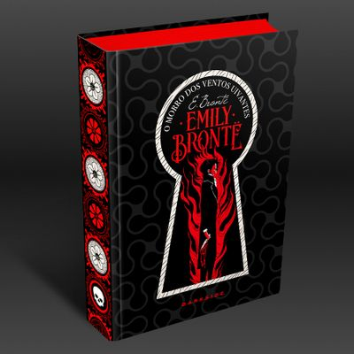

Resenha Pessoal
O livro se trata de uma historia de amor entre dois jovens que vivem um amor proibido Cathy se apaixona pelo irmão adotivo Heathcliff mas a familia é contra esse relacionamento a historia é contada pela ex governanta da casa que agora trabalha para o novo morador do morro dos ventos uivantes após a morte de Cathy seu antigo amor volta para sua cidade natal para criar o filho e herdar as propriedades um homem muito rancorosso que tenta do seu jeito rude falar de seus sentimentos de maneira melancolica dica pessoal não se apaixone por nenhum personagem que no fim pode acabar se desiludindo no final um otimo livro para quam é fã de um romançe antigo. 
Crepuscúlo
A saga de livros que ganhou até filme sendo um best seller super conhecido pelo mundo inteiro que conta a historia
de romance entre uma jovem com um vampiro, eu sei! assustador mas esta longe de ser um romance normal
retrata a "obsessão" de Edward Cullen por Isabella Swan (bella para os intimos) é retratado melhor nos livras
do que nos filmes, uma leitura que te faz chorar tanto de raiva como de tristeza e magoa.